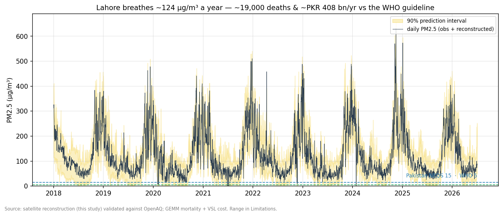
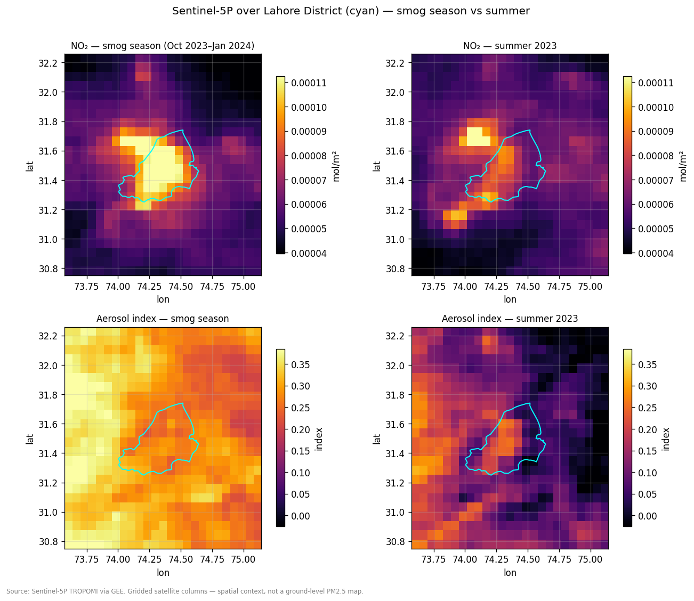
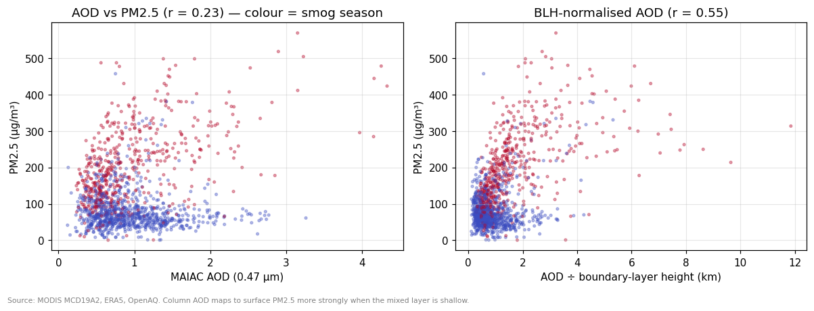
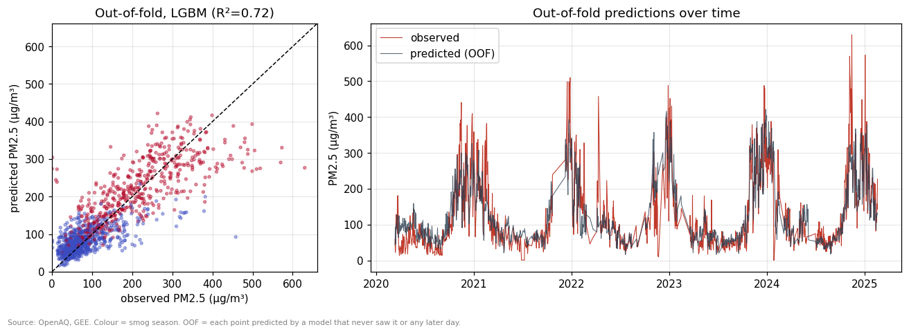
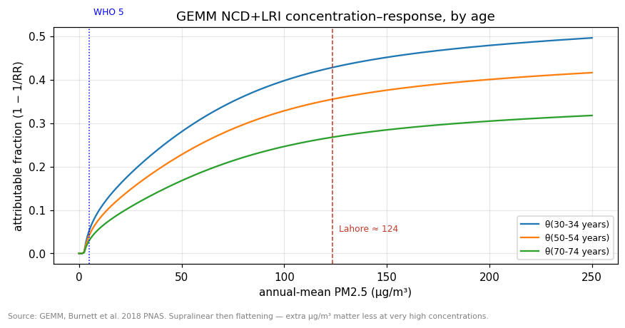
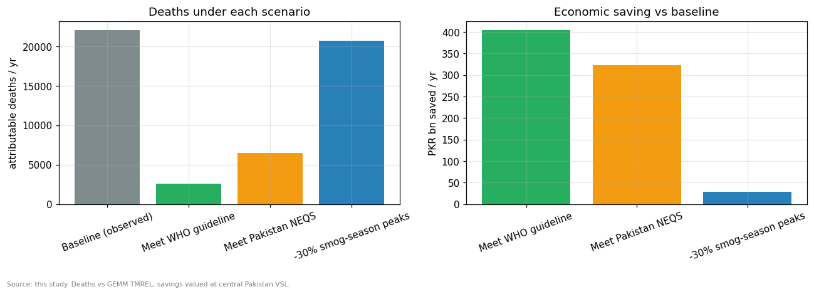
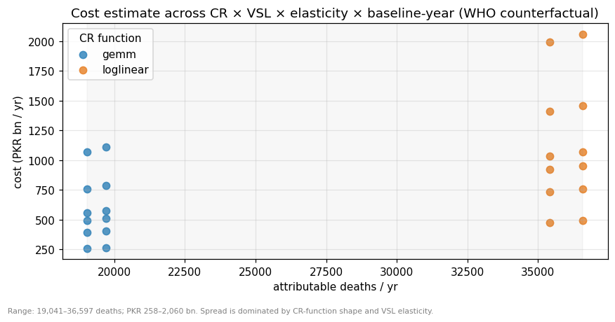

The Price of Lahore’s Air
A satellite reconstruction of PM2.5 and its human and economic cost

The headline. Lahore breathes an annual-mean ≈124 µg/m³ of PM2.5 — about 25× the WHO guideline. That pollution is associated with roughly 20,000 premature deaths a year and an economic cost near PKR 400 billion (≈USD 1.5 billion), valued against the WHO guideline. Across defensible modelling choices the range is 19,000–36,600 deaths and PKR 260–2,060 billion.
The problem
Every winter Lahore disappears into smog. Yet the city has almost no public ground-truth: a single reference-grade monitor at the US Consulate, reporting since 2019 and going dark in February 2025, with roughly a fifth of days missing. You cannot manage what you cannot measure — and you certainly cannot put a price on it.
This project does three things. It reconstructs a continuous daily PM2.5 record for Lahore from free satellite and weather data, validated against that one monitor. It reconstructs the gaps so there is a value for every day since 2018. And it translates the pollution into its human toll — excess deaths and a rupee cost — with an interactive tool to ask what cleaner air would buy.
The data
| Group | Variables | Source |
|---|---|---|
| Ground truth | daily PM2.5 (reference monitor + 81 low-cost sensors) | OpenAQ v3 |
| Satellite gases/aerosol | NO₂, absorbing aerosol index, CO, SO₂, HCHO | Sentinel-5P (TROPOMI) via GEE |
| Aerosol optical depth | MAIAC AOD @ 1 km | MODIS MCD19A2 via GEE |
| Meteorology | 2 m temp, dewpoint, wind, precip, pressure, boundary-layer height | ERA5 / ERA5-Land via GEE |
| Fire activity | daily VIIRS active-fire counts, east/west of Lahore | NASA FIRMS |
| Population & mortality | 2020 population raster; Punjab NCD+LRI death rates | WorldPop; GBD 2023 (IHME) |
Everything is aggregated to a single daily value over Lahore District — one number per day per variable — which keeps satellite exports tiny and honest.

The method
A gradient-boosted model (LightGBM) predicts daily ground-level PM2.5 from the satellite and weather features. Two design choices matter most.
Physics in a feature. Satellites see a column of aerosol; what people breathe is the surface concentration. The link between them depends on how deep the atmosphere is mixing, so the strongest single predictor is AOD divided by the daytime bound-layer height. On its own, raw AOD barely correlates with surface PM2.5 (r ≈ 0.23); normalised by mixing depth it more than doubles to r ≈ 0.55.

Honest validation. Air-quality days are strongly autocorrelated, so a random train/test split would leak information from neighbouring days and flatter the model. Instead every metric here comes from expanding-window time-series cross-validation: each prediction is made by a model that never saw that day or any later one.
How well it works
| Model | R² (overall) | R² (smog season) | RMSE |
|---|---|---|---|
| Seasonal climatology (monthly mean) | 0.52 | 0.17 | 72 |
| Linear: AOD only | 0.04 | −0.55 | 98 |
| Linear: AOD + meteorology | 0.64 | 0.42 | 60 |
| LightGBM (chosen) | 0.72 | 0.55 | 55 |
The model reaches R² ≈ 0.72, at the lower edge of the 0.72–0.80 range reported for published satellite-PM2.5 models — a fair result for a single ground station. More telling is the smog season: a simple monthly climatology already gets R² ≈ 0.52 overall because Lahore’s cycle is so regular, but it collapses to 0.17 within the smog season, exactly when the numbers matter. The satellite model holds at 0.55 there — that within-season skill is what the calendar alone cannot give you.

Predictions carry a calibrated 90% interval. Raw quantile-regression bounds covered only 61% of observations out-of-fold, so they were widened by conformal calibration (CQR) to honest 90% coverage.
The cost of the air
Translating pollution into lives uses the GEMM concentration–response function (Burnett et al. 2018, PNAS) for non-communicable disease plus lower-respiratory infection. Lahore District’s ~10.8 million people are split by age using the GBD 2023 Punjab age structure; age-specific baseline death rates give a baseline burden; and GEMM converts the annual-mean PM2.5 into the share of those deaths attributable to the pollution, relative to a counterfactual.

That flattening has a sharp policy implication. Shaving 30% off the worst smog-season days barely moves the annual mean, and so averts only ~1,400 deaths. Meeting the WHO guideline outright would avert ~19,600.

Deaths are valued with a Value of a Statistical Life transferred to Pakistan’s income level (OECD base VSL scaled by GNI per capita with an income elasticity of 1.0–1.2) and converted at PKR 277/USD.
Is the number believable?
A single city producing ~20,000 pollution deaths sounds enormous — so it should be checked. Pakistan’s national PM2.5 death toll is ~157,800 per year (GBD 2021 / State of Global Air 2024). Lahore District holds about 4.5% of the country’s population but, on this estimate, ~12.5% of its PM2.5 deaths — the expected signature of one of the world’s most polluted cities, not an implausible outlier. (The older World Bank figure of ~22,000 outdoor-air deaths for all of Pakistan is now widely regarded as a substantial underestimate against GBD.)

Limitations
This is a portfolio study, and it is built to be candid about what it is not.
- One ground station. The model is trained and validated against a single reference monitor. It is a city-level estimate; there is deliberately no fabricated gridded PM2.5 surface. The one cross-check available — Lahore’s low-cost sensor network after the reference monitor went dark — agrees with the model at r ≈ 0.90, which is reassuring but not a substitute for more reference stations.
- Hardest where it matters. Model error is largest during the extreme smog episodes that drive the exposure, and the model tends to underpredict the worst peaks — likely making the health burden, if anything, conservative.
- Coarse, cloudy satellites. Sentinel-5P is ~7 km and cloud-gapped; MAIAC AOD is 1 km but also cloud-limited. They inform a city aggregate well, not intra-city detail.
- Contestable health economics. The GEMM-versus-log-linear concentration–response choice and the VSL income elasticity together drive most of the headline range. Baseline mortality is Punjab-level, not Lahore-specific. This is an association-based burden estimate, not a causal experiment; the scenario tool describes what-if arithmetic, not a proven intervention effect.
- Fires are context, not attribution. Crop-fire counts help the model modestly but correlate only weakly with day-to-day smog-season PM2.5, so no “crop-burning share” is claimed.
Reproducibility
The repository runs end-to-end from a pinned environment. Numbered scripts pull the data (01–03, 08), build the model frame (04), train and validate (05), reconstruct the series and compute the cost (06–07); a small sample dataset is committed so the pipeline runs without API keys, and a QA_REPORT.md records an independent re-derivation of the cost arithmetic and the CV design.
Sources: OpenAQ · Sentinel-5P, MODIS MAIAC AOD, ERA5 via Google Earth Engine · NASA FIRMS · WorldPop 2020 · GBD 2023 (IHME) · Pakistan NEQS · GEMM (Burnett et al. 2018, PNAS) · World Bank & State of Global Air for reconciliation.